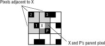
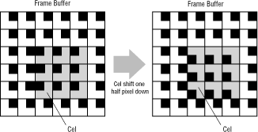

Figure 1: Possible cornerweight location
For example, consider the two subpixels labeled P and X in Figure 2. Because subpixel P contains the cornerweight, it assumes the parent pixel's color value without modification. Subpixel X starts with the parent's color value, and grades it toward the color values in the three adjacent pixels. It's most strongly influenced by pixel 1, whose cornerweight is very close. It's less influenced by pixel 3, whose cornerweight is more distant. And it's least influenced by pixel 2, whose cornerweight is farthest away.

Figure 2: Cornerweight locations.
Note: Most images in the frame buffer use the same cornerweight position for each of their pixels. The example in Figure 2, which shows varying cornerweight positions, is a rare case. Cornerweight positions can be used to give objects 640 x 480 vertical positions.
When the cel engine projects this kind of fine-positioned cel, it uses the 640-by-480 position to set a uniform cornerweight position for each cel pixel-one that corresponds to the cel corner's position within a frame buffer pixel. For example, consider a cel projected so that its origin corner is in the upper-left corner of a frame buffer pixel. All the cel's cornerweights are set to the upper-left corner of each pixel. When the cel moves one subpixel to the right so the cel corner is in the upper-right corner of a frame buffer pixel, all the cel's cornerweights are set to the upper-right corner of each pixel. It's the shifting cornerweight positions that make the cel appear to move smoothly.
One interesting consequence of fine motion appears along the borders of the moving cel: you may see some jitter as the cel moves if the cel border is complex. That's because the cel pixels along the border constantly change their cornerweight relationship to the background pixels' cornerweights, which remain fixed. The cel's interior pixels retain the same cornerweight relationship to each other, because they all change to the same cornerweight position while the cel moves.
For example, consider Figure 3, where a cel shifts one-half pixel down. The cornerweights all around the border of the cel have all changed distances from cornerweights across the border, which change the graded colors of the subpixels between the cornerweights. The cornerweights within the cel all remain the same distance from each other, so the graded colors remain the same within the cel.

Figure 3: Moving a cel by one-half pixel.